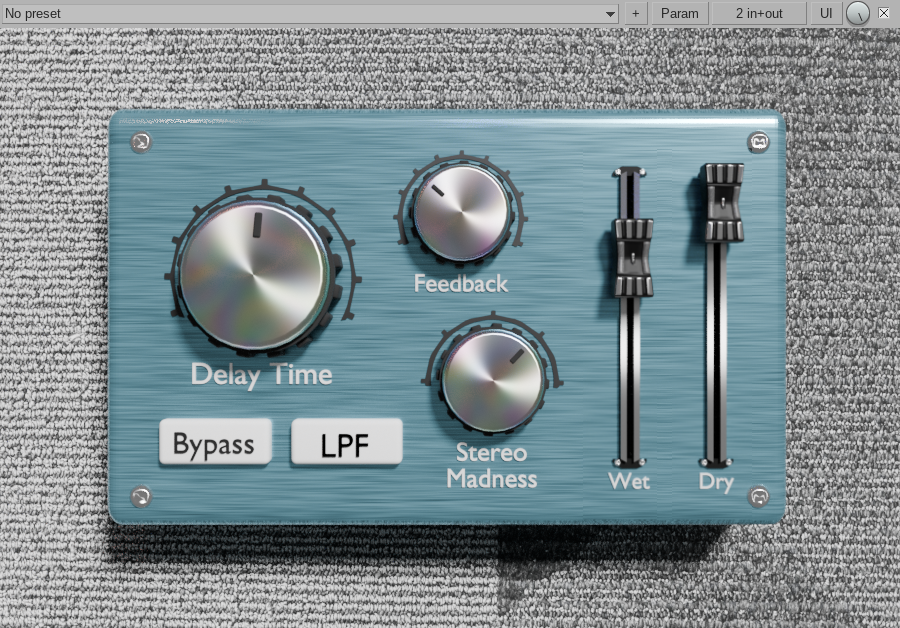
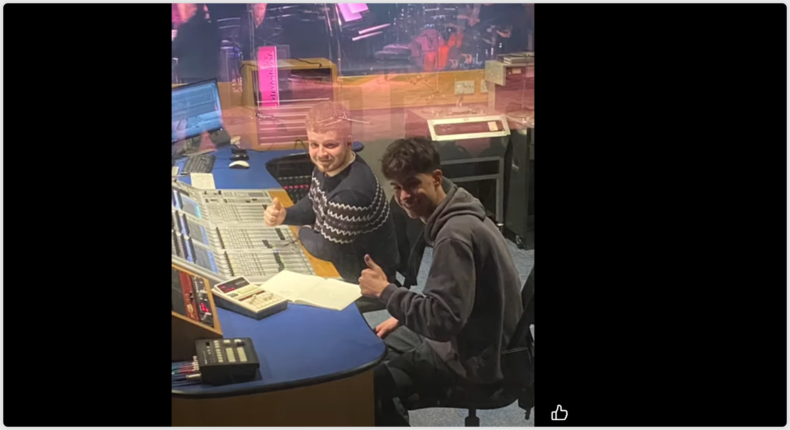
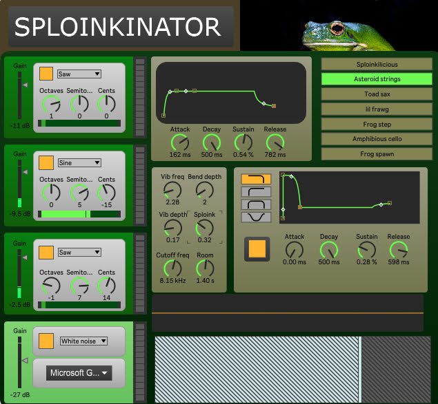
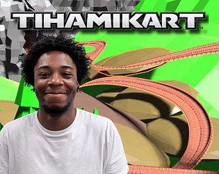

Delayity Audio Delay
My first plugin - a delay plugin built with with C++/JUCE. I made the UI in blender, then created the custom ui using those animations and renders. It sounds great! currently built only for linux and MacOS. I still need to make a Windows version
March 2026
Accidentals Recording Session
A collection of recordings made with The Accidentals on the 10th of March 2026. This was a fantastic recording of a large ensemble recorded in Studio 1 of PATS as part of the Tonmeister course at the Institute of Sound Recording, University of Surrey.
March 2026
Sploinkinator synth
This is a frog themed synthesiser. It and the presets within are designed around the filter ADSR and "sploink" (resonance) giving it a frog like sound that I found really fun to play around with. This is a max msp project, and thus requires the user to download maxpatch to operate the plugin, but it is free to use!
February 2024
Tihami Kart
This is a trackmania clone I made in Godot 4 with two tracks named after friends - this was a solo project, and all assetts including 3D models and music were created by me.
November 2025Ty Climbs Guildford Cathedral
This is a game I made with my mate in it because I had a few evenings free between assignments - I took photos of him, then used aseprite to turn him into a spritesheet.
October 2025